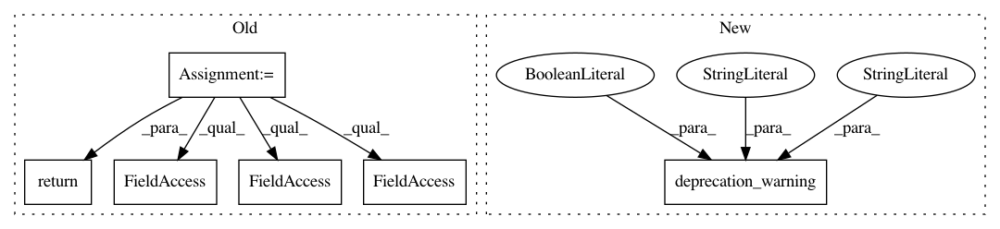

2e3655e8a9b1e37fa6e29f11db02a6b53cfb5928,rllib/agents/a3c/a3c_tf_policy.py,,postprocess_advantages,#Any#Any#Any#Any#,48
Before Change
sample_batch,
other_agent_batches=None,
episode=None):
completed = sample_batch[SampleBatch.DONES][-1]
if completed:
last_r = 0.0
else:
next_state = []
for i in range(policy.num_state_tensors()):
next_state.append(sample_batch["state_out_{}".format(i)][-1])
last_r = policy._value(sample_batch[SampleBatch.NEXT_OBS][-1],
sample_batch[SampleBatch.ACTIONS][-1],
sample_batch[SampleBatch.REWARDS][-1],
*next_state)
return compute_advantages(
sample_batch, last_r, policy.config["gamma"], policy.config["lambda"],
policy.config["use_gae"], policy.config["use_critic"])
def add_value_function_fetch(policy):
return {SampleBatch.VF_PREDS: policy.model.value_function()}
After Change
episode=None):
// Stub serving backward compatibility.
deprecation_warning(
old="rllib.agents.a3c.a3c_tf_policy.postprocess_advantages",
new="rllib.evaluation.postprocessing.compute_gae_for_sample_batch",
error=False)
return compute_gae_for_sample_batch(policy, sample_batch,
other_agent_batches, episode)
In pattern: SUPERPATTERN
Frequency: 3
Non-data size: 6
Instances
Project Name: ray-project/ray
Commit Name: 2e3655e8a9b1e37fa6e29f11db02a6b53cfb5928
Time: 2021-01-19
Author: sven@anyscale.io
File Name: rllib/agents/a3c/a3c_tf_policy.py
Class Name:
Method Name: postprocess_advantages
Project Name: ray-project/ray
Commit Name: 99ae7bae05b04908a392fa111e19f7cc72692bf4
Time: 2020-12-26
Author: sven@anyscale.io
File Name: rllib/policy/torch_policy_template.py
Class Name:
Method Name: build_torch_policy
Project Name: ray-project/ray
Commit Name: 2e3655e8a9b1e37fa6e29f11db02a6b53cfb5928
Time: 2021-01-19
Author: sven@anyscale.io
File Name: rllib/agents/a3c/a3c_torch_policy.py
Class Name:
Method Name: add_advantages